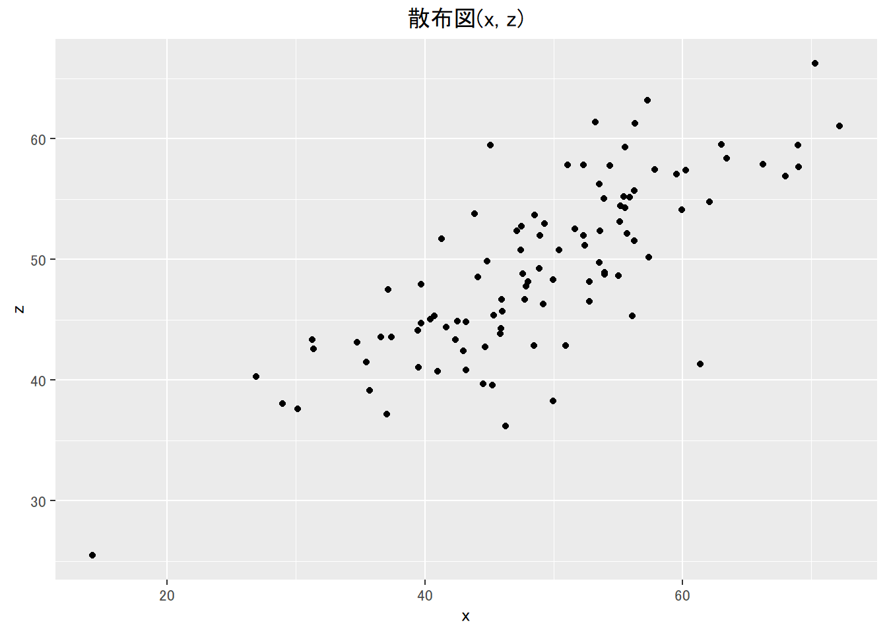
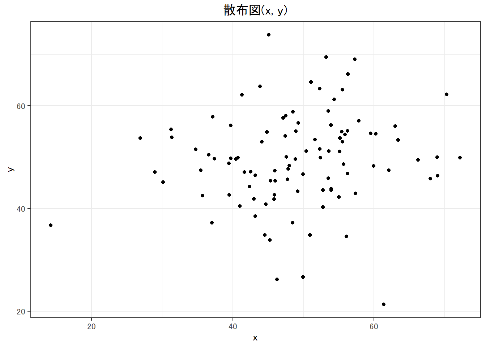
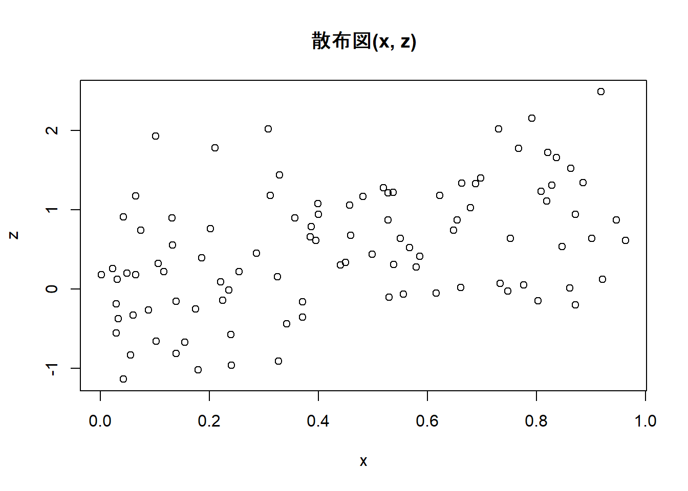
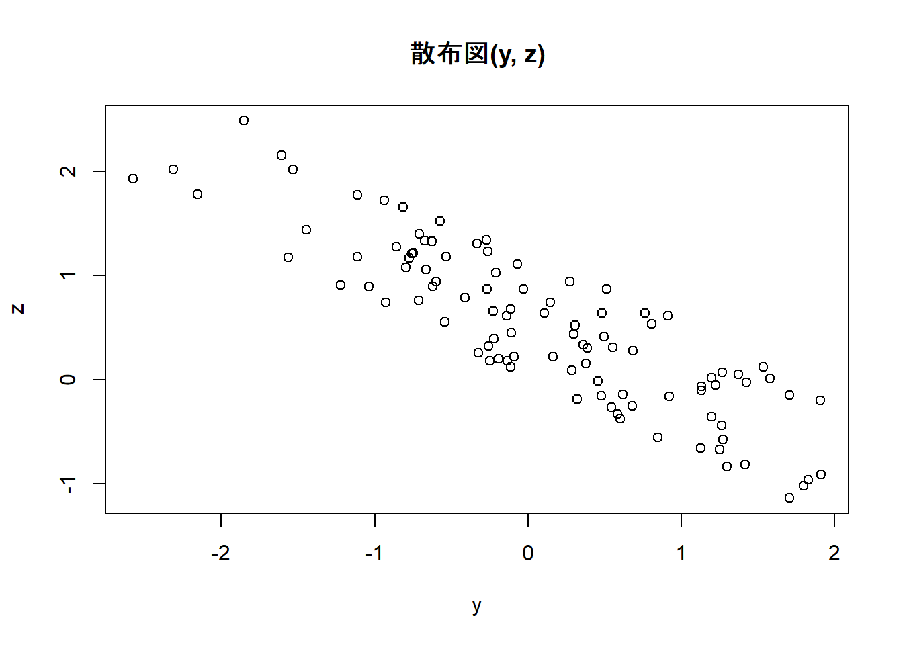

Week2 | Rによる自主勉強会
伊﨑 直志
2023年10月13日
準備
Loading Packages
library(tidyverse)
library(dplyr)
library(gridExtra)##
## 次のパッケージを付け加えます: 'gridExtra'## 以下のオブジェクトは 'package:dplyr' からマスクされています:
##
## combinewindowsFonts(family_sans = windowsFont("Noto Sans JP"))
par(family = "family_sans")
knitr::opts_chunk$set(echo = TRUE)第1章 回帰分析の目的
1.1. 相関と因果
相関関係 correlation：「Xが変化すればYも変化する」
因果関係 causality：「Xを変化させればYも変化する」
疑似相関 spurious correlation
「変数XとYに共通の第3の要因Zが存在することによってXとYに生じる見せかけの相関関係」
e.g. 個人所得の増加 →タバコへの支出増加、医療・健康への支出増加 ＝タバコと健康の疑似相関
- 時間的先行性: 原因となる現象が結果となる現象に時間的に先立って起きている。
- 共変関係（相関関係）: 原因となる現象が変動すると、結果となる現象も変動する。
- 他条件の同一性: 原因となる現象の双方に与える現象は存在しないか、その影響は統制されている。
1.2. 回帰と予測
一次関数 \(y=a+bx\) の形で表現 →最小二乗法（least squares estimation）（図1.1 →図1.6）
回帰直線、回帰式、回帰係数
回帰式の一方の変数に代入してもう一方の変数の値を計算、予測
ある変数Xの値をもとにして、他の変数Yの値を予測 ＝回帰分析
X：説明変数、Y：被説明変数⇒因果解釈ではなく、あくまで予測解釈！
回帰分析 →Xが与えられた時のYの値の予測
1.3. 自然科学のデータと社会科学のデータ
実験の難しさ（費用等コスト、倫理）
⇔自然科学：変数選択の制約・影響少、実験室実験可（変数統制） [従来的説明]
→現在、社会科学における実験多数：実験経済学等 or 自然実験…（後述）
第2章 統計の基礎知識
2.1. 母集団と標本
（有限集団全体）母集団－（抽出）標本
（確率分布）母集団－（観測値）標本 （←本書）
正規分布 normal distribution
正規分布\(N(平均, 分散=標準偏差^2)\)
正規分布（乱数）: rnorm(個数, 平均, 標準偏差)
rnorm(100, 50, 10) ## [1] 38.78677 47.91950 39.96348 48.84247 61.98315 74.79036 50.90195 42.91318
## [9] 44.42630 40.88731 51.99671 48.11841 62.94519 56.56053 52.49919 40.09879
## [17] 50.94832 32.30169 45.24458 38.43559 46.44747 52.66684 57.62575 45.65243
## [25] 81.94123 30.26383 66.06405 40.26158 28.93780 55.63415 58.87103 65.07060
## [33] 55.01251 49.82370 54.60099 74.83745 49.17084 55.58675 46.09531 42.03771
## [41] 53.92063 28.42284 41.96060 61.93234 61.10231 73.84515 47.50500 45.59833
## [49] 65.95245 41.84615 52.10960 61.90847 46.26821 57.56044 41.83205 51.53316
## [57] 45.81183 46.81961 37.16849 43.04715 45.89597 47.61071 57.46515 59.62500
## [65] 57.01171 48.55434 50.68018 67.94446 45.31272 40.10534 62.20738 52.64285
## [73] 49.16746 41.89428 56.41056 49.78164 42.21504 48.20462 74.83237 41.77959
## [81] 34.41442 42.47168 46.03459 54.27809 48.63210 44.33631 43.84654 66.76690
## [89] 40.01591 54.84196 60.42704 58.05901 65.01726 66.96933 73.55624 44.25341
## [97] 55.44185 42.17407 53.13818 64.89445curve(dnorm(x, 50, 10), 0, 100) #正規分布のグラフ描画
pnorm(60, 50, 10) #大きさ１の標本の値が60より小さくなる確率## [1] 0.8413447| 命令 | 説明 | （英略） |
|---|---|---|
rnorm(n, a, b) |
平均a, 標準偏差bの正規分布乱数をn個発生させる。 | random+norm |
dnorm(x, a, b) |
平均a, 標準偏差bの正規分布について, 密度関数の点xにおける値を計算する。 | density+norm |
pnorm(x, a, b) |
平均a, 標準偏差bの正規分布について, 分布関数の点xにおける値を計算する。 | probability+norm |
正規分布グラフ 描画関数
curve(dnorm(x, a, b), min, max) #curve(関数の式,
横軸の最小値, 横軸の最大値)
2.2. 無作為抽出
母集団から標本を抽出（random sampling）
rnorm(100, 50, 10)## [1] 53.99031 47.78694 36.78409 51.94071 57.76010 44.09889 42.52395 42.87235
## [9] 37.81338 56.70345 37.28624 55.91033 56.50156 54.43043 57.51733 46.16691
## [17] 55.72485 46.43559 28.60911 52.09727 48.80904 57.13271 41.31168 40.99060
## [25] 35.43420 47.46576 60.44629 55.66365 43.93689 36.09675 50.09889 67.66494
## [33] 53.96805 38.25925 35.12105 35.41649 51.97291 77.57975 59.20171 40.01682
## [41] 49.52843 42.66052 57.84184 39.99555 35.84403 53.84878 38.99883 47.17757
## [49] 40.80360 50.81653 47.65894 67.57894 63.75531 62.20635 47.64099 45.34689
## [57] 50.26897 37.74973 43.56497 69.56176 68.64546 59.30194 47.51827 41.47415
## [65] 59.76462 33.21945 51.54347 36.90489 39.30628 40.84735 48.54433 26.59639
## [73] 59.00114 45.98427 37.65198 47.95919 42.07062 46.68733 40.34249 58.10119
## [81] 39.34670 33.31385 47.75516 49.99803 50.87727 46.82127 54.60453 47.50253
## [89] 55.21991 49.34909 46.74037 38.57389 57.65947 43.65937 53.09289 50.49651
## [97] 42.90522 59.29099 38.53372 49.23948Z <- rnorm(100, 50, 10)
Z## [1] 49.59204 53.98504 65.29315 42.89445 49.68927 30.80449 55.80392 45.72349
## [9] 48.91253 40.70416 53.42709 59.14116 49.55902 52.54872 48.13316 53.63552
## [17] 50.32369 57.19231 47.37775 42.80803 44.38884 54.17022 46.60112 65.02423
## [25] 51.31577 49.90030 48.12272 57.80874 53.44313 50.96196 49.99210 51.57978
## [33] 59.57693 47.41357 63.75284 31.41814 57.32726 63.08246 41.71899 43.42291
## [41] 37.02532 63.48429 42.41867 26.10744 52.78485 58.55281 48.76256 40.11342
## [49] 43.70626 57.98842 35.12628 48.92024 31.80657 47.02968 37.30556 40.27839
## [57] 41.75898 50.50616 55.64555 22.57435 60.60090 63.25425 37.41877 35.00556
## [65] 53.50063 39.52473 48.77973 50.40219 55.03425 64.34966 53.40643 44.93397
## [73] 52.77868 49.50349 47.62557 57.73045 51.43488 54.13460 60.17123 52.24585
## [81] 52.26348 48.88508 49.88462 64.02180 52.34142 52.60659 55.01370 57.41749
## [89] 44.68686 45.59455 46.26246 44.39596 53.62628 66.85280 33.58881 54.19129
## [97] 21.39228 38.84640 47.96153 55.94703hist(Z) #ヒストグラム
Z[1:10] #最初の10個のデータを抜き出し## [1] 49.59204 53.98504 65.29315 42.89445 49.68927 30.80449 55.80392 45.72349
## [9] 48.91253 40.70416a <- c(5, 10, 100)
Z[a] #5番目,10番目,100番目の位置にある数字を抜き出し## [1] 49.68927 40.70416 55.94703Z[c(5, 10, 100)] #aを使わずに同上の操作## [1] 49.68927 40.70416 55.94703#特定の意味を持つ数値を抽出
max(Z) #最大値## [1] 66.8528which.max(Z) #最大値の位置## [1] 94min(Z) #最小値## [1] 21.39228which.min(Z) #最小値の位置## [1] 97mean(Z) #平均値## [1] 49.28083summary(Z) #基本統計量を一括表示## Min. 1st Qu. Median Mean 3rd Qu. Max.
## 21.39 44.39 49.95 49.28 54.40 66.851:10## [1] 1 2 3 4 5 6 7 8 9 10sample(1:10, 3) #無作為抽出、sample(範囲, 抽出個数)## [1] 8 5 9sample(Z, 5) #sample(標本, 抽出個数)## [1] 42.80803 57.32726 40.27839 50.96196 54.13460sample(Z, 5) #sample(標本, 抽出個数)## [1] 38.84640 63.48429 26.10744 52.54872 53.44313fruits <- c("ミカン", "バナナ", "リンゴ", "レモン", "モモ")
fruits## [1] "ミカン" "バナナ" "リンゴ" "レモン" "モモ"sample(fruits, 1) #fruitsから1個抽出## [1] "モモ"sample(fruits, 2) #fruitsから2個抽出## [1] "レモン" "ミカン"sample(fruits, 1) #fruitsから1個抽出## [1] "バナナ"sample(fruits, 1) #fruitsから1個抽出## [1] "レモン"コイン投げ1
coin <- c("Head", "Tail")
#sample(coin, 5) #うまくいかない ∵非復元抽出になっている
sample(coin, 5, replace = TRUE) #復元抽出, replace=TRUE## [1] "Head" "Head" "Tail" "Tail" "Tail"2.3. 平均と大数の法則
- ①ベクトルrecのi番目の場所rec[i]に
- ②母集団N(50,10^2)から抜き出した大きさ100の標本の平均を格納する
mean(Z) #標本平均## [1] 49.28083mean(rnorm(100, 50, 10))## [1] 50.86723mean(rnorm(100, 50, 10)) #Z<-rnorm(100,50,10)## [1] 49.60582#より多い試行、抽出1000回、標本の大きさ100
S <- 1000
rec1 <- numeric(S)
for(i in 1:S){rec1[i]<-mean(rnorm(100, 50, 10))}
rec1## [1] 49.23574 49.76829 50.53335 47.51037 49.07139 48.69775 49.17818 49.99589
## [9] 50.33185 50.81989 49.76102 49.56426 49.52372 48.13287 49.58344 50.37413
## [17] 50.73246 49.94291 49.81900 51.46735 49.63714 50.49675 49.80019 51.47741
## [25] 48.75881 47.57782 50.56301 49.90488 49.67866 49.88831 51.09252 49.67022
## [33] 51.52544 50.78903 49.34645 50.13478 50.47245 50.27850 49.52058 48.83088
## [41] 50.34836 51.44494 46.94990 48.32655 50.63140 49.34052 50.37784 48.82839
## [49] 50.37118 51.50049 48.06035 49.18033 48.42151 50.11918 49.27049 49.69267
## [57] 49.25429 49.74531 49.50563 48.83105 49.16790 50.32685 49.14356 50.88765
## [65] 50.02683 49.27892 51.20544 50.30256 50.23261 48.89584 49.39052 49.57735
## [73] 50.64888 50.22710 48.40956 51.25543 50.29116 49.33818 49.61248 49.92989
## [81] 52.43408 49.21133 51.37266 49.08033 49.99428 49.98487 50.58130 50.07633
## [89] 50.66774 49.57971 49.59661 51.66412 49.35871 51.07126 50.36210 50.76288
## [97] 49.28169 48.69197 48.76285 50.03233 49.59466 49.42454 50.97892 50.01030
## [105] 50.24984 48.38706 52.62122 49.29711 51.32596 48.70876 49.93055 49.09794
## [113] 50.21289 48.73718 51.39293 48.54989 48.42827 50.20413 50.73992 49.04507
## [121] 52.20450 49.37928 49.48921 50.08943 50.35137 51.52612 49.67464 50.17529
## [129] 50.43957 51.45702 49.44200 50.19707 48.66603 51.83017 48.67694 50.13496
## [137] 50.01331 48.72657 50.42709 50.07449 50.55986 48.80362 48.66527 50.91103
## [145] 52.54768 49.29859 49.56503 49.40614 50.92740 48.92222 48.33559 50.68107
## [153] 50.78248 49.80621 49.86628 50.80970 50.77233 51.22205 50.05868 49.93474
## [161] 48.80248 49.74043 51.07636 51.47481 50.06068 49.14185 48.80274 49.65676
## [169] 49.13199 50.86579 50.40360 49.68825 48.37411 49.57123 50.15505 50.16413
## [177] 50.38673 49.45208 48.49129 48.82194 50.71610 50.33808 49.72096 51.21405
## [185] 50.28735 51.13893 50.05664 51.93689 48.50297 49.45996 47.71596 49.79481
## [193] 51.07305 49.73618 50.14034 49.63605 50.99254 50.10714 51.54071 48.88425
## [201] 49.06241 50.35292 50.51125 51.28755 49.65684 51.86798 50.09608 50.30773
## [209] 48.83156 48.49251 50.59569 50.88499 50.33913 49.80255 49.43003 50.69796
## [217] 49.04298 50.74330 49.54228 49.75830 51.06003 49.92961 49.55955 49.32908
## [225] 49.94306 48.31537 50.67553 51.36813 49.39430 49.02200 50.75621 49.79499
## [233] 50.35966 52.20443 48.74767 49.40641 50.32833 50.74989 48.83120 50.74955
## [241] 48.81410 50.45350 49.59654 48.28382 49.97416 50.36571 49.00982 50.42663
## [249] 52.32359 51.16747 49.50467 51.19492 48.31548 50.11555 50.62541 50.12624
## [257] 50.13221 49.92458 51.27674 49.46252 51.11497 49.29816 50.98257 49.87601
## [265] 50.73307 51.89398 50.70541 49.41287 48.53569 49.68848 50.35063 47.99703
## [273] 50.25325 47.47461 50.09355 50.65278 49.04166 49.40575 50.08165 49.76778
## [281] 50.98310 49.04669 49.73485 51.72778 50.57805 51.37210 48.72696 48.90197
## [289] 50.77367 50.60504 50.64156 50.11443 49.04375 50.92928 48.98142 49.74238
## [297] 47.68302 50.41385 49.60118 49.11225 50.84001 50.49292 50.11667 49.85497
## [305] 50.26705 52.19303 50.18607 51.12162 50.83636 51.53320 50.32112 49.14530
## [313] 49.17317 49.59191 52.39677 51.08465 49.87783 49.63481 49.57964 50.70858
## [321] 50.50087 49.70035 48.57070 48.15852 49.70718 50.56363 48.27595 49.20602
## [329] 49.38866 49.15419 50.62928 49.96817 49.60974 49.84841 49.19135 48.78770
## [337] 50.42150 49.96070 50.43505 50.42880 48.94911 49.18685 50.39231 48.78764
## [345] 50.31424 50.87235 50.94406 50.69006 48.62957 50.54982 50.21368 48.77588
## [353] 49.55581 50.00142 49.78448 48.19765 49.63849 48.08215 48.98389 49.64546
## [361] 49.73083 49.15906 49.08380 50.96654 48.38898 50.76646 50.56017 51.73326
## [369] 51.47035 49.36049 50.22225 47.50785 48.35927 49.68720 49.52113 51.85484
## [377] 50.21096 49.19909 49.17332 49.52774 50.86879 51.18549 50.27162 49.18479
## [385] 50.20485 49.51071 49.54695 49.28114 48.64858 48.70932 52.99824 49.90041
## [393] 48.93677 50.82132 51.19796 49.66756 50.76140 49.06627 49.93727 51.58198
## [401] 49.79684 48.36298 51.50410 49.08877 51.31726 49.44869 51.03727 50.88318
## [409] 50.80792 51.46251 47.63011 49.03188 48.39477 48.93331 49.30040 51.47860
## [417] 49.11046 51.33039 52.03979 49.62176 50.71358 49.86570 49.56874 49.10336
## [425] 49.08477 50.79845 49.50396 50.59997 49.04251 50.21477 50.29022 49.98576
## [433] 49.24764 50.46121 48.26304 51.45081 49.98774 50.60289 50.15717 48.92984
## [441] 49.82695 49.57193 51.07123 49.32070 49.88764 51.05269 53.02158 49.87025
## [449] 49.79058 48.66102 50.20741 50.85115 46.71326 48.59970 49.56168 50.66174
## [457] 49.68715 50.67516 50.01891 49.35650 50.64731 50.49752 50.26937 50.83200
## [465] 49.14680 50.81226 49.06521 50.50609 49.19316 49.58240 50.36959 50.78953
## [473] 50.06873 49.39282 49.00205 48.97015 46.53406 49.28741 49.25175 50.13033
## [481] 51.44787 49.63469 51.40517 49.93220 48.89143 49.73128 50.73449 49.78510
## [489] 50.67955 50.41181 52.08003 49.71868 51.01572 50.07730 51.66122 49.45984
## [497] 49.95447 50.58257 51.04548 48.14641 51.42808 49.18610 48.83260 49.15848
## [505] 50.86940 49.88156 48.23281 49.22212 51.20993 50.19113 49.86444 49.51183
## [513] 51.41178 49.83061 50.61794 49.15522 50.40012 50.65159 49.23336 51.35742
## [521] 50.23917 50.55821 50.36760 50.91821 49.89273 49.65293 50.72223 50.35474
## [529] 48.56308 50.58387 50.68235 48.49935 50.85955 51.33746 52.00202 50.99303
## [537] 50.78447 49.60137 50.24077 48.91166 50.85986 49.80363 50.16848 48.47101
## [545] 50.49642 50.08412 50.31148 48.94194 50.98271 49.52124 51.43175 49.52895
## [553] 50.74437 49.71772 49.48882 50.20388 50.28888 49.47268 49.89893 49.31369
## [561] 50.38307 50.96822 49.96325 48.21206 50.82040 50.68459 50.38819 50.64615
## [569] 50.41728 49.71661 51.15156 51.37307 48.93948 50.04322 47.95287 48.82632
## [577] 50.29115 51.98108 48.93815 51.97594 51.39001 49.76171 49.17712 50.73269
## [585] 50.82978 51.24599 50.65271 49.89820 47.83073 51.40457 48.45980 48.74907
## [593] 49.52259 50.24091 50.40992 49.67991 48.39761 48.11362 48.75849 49.38066
## [601] 47.70229 50.75223 50.40804 50.19095 51.06808 48.93740 50.87711 50.35172
## [609] 51.89564 52.44587 49.35595 50.83081 51.22903 51.50681 50.25539 49.15071
## [617] 49.70305 50.31145 50.28452 51.19123 50.40346 49.35228 50.53623 49.81144
## [625] 49.35466 49.13318 49.47924 49.61290 51.20564 51.42389 51.59608 49.93530
## [633] 50.95054 49.34589 49.19982 49.99972 50.43451 51.19834 47.88957 50.41848
## [641] 48.26194 50.33035 48.69672 49.04821 48.57797 48.43916 49.25769 51.12030
## [649] 50.01984 48.58932 50.15578 49.65047 49.67471 50.76166 50.03085 48.34349
## [657] 50.91538 49.19598 49.20807 47.29263 48.72549 48.99587 48.33832 49.63178
## [665] 50.61563 49.17808 52.26210 51.03965 50.37575 48.65838 50.05153 49.93535
## [673] 51.17837 50.20201 50.56409 50.01385 48.58985 48.65723 50.66595 50.24315
## [681] 50.33719 50.73047 49.45332 48.78548 49.88535 50.05941 49.14363 51.25432
## [689] 50.24623 48.94614 49.93763 49.05703 49.35513 49.98397 49.82301 49.07487
## [697] 49.79452 52.40280 49.72188 50.15869 48.84129 49.38963 48.68335 50.26962
## [705] 50.56652 48.88611 49.52183 49.23327 48.91145 50.89003 50.37950 52.19419
## [713] 51.31278 50.11835 49.39668 50.36927 50.14663 50.28064 51.13586 49.25851
## [721] 47.15744 50.01978 51.16595 49.02402 49.86247 51.25098 50.42877 50.52068
## [729] 50.16037 49.42488 50.45457 49.89318 49.90511 50.41268 50.92874 48.97888
## [737] 49.30196 51.47042 49.48903 50.71534 48.47709 48.75207 49.37475 50.19352
## [745] 49.66781 49.66690 50.28653 50.25767 51.65825 50.18151 49.46208 50.84153
## [753] 50.22613 50.95170 49.85479 48.68421 50.89139 51.63575 52.15788 51.73255
## [761] 50.37904 51.38976 51.11635 49.02955 51.14228 51.58185 49.19810 51.84717
## [769] 49.40603 49.58129 51.91520 50.58037 51.45932 51.96597 49.75730 50.10095
## [777] 50.32195 50.79387 50.05187 50.90605 50.33728 49.46954 52.54973 52.37418
## [785] 49.91214 48.17321 50.80252 48.34132 50.34645 49.99756 49.34362 48.72685
## [793] 48.30499 49.78918 48.85786 50.44482 50.12030 49.80170 50.61871 49.17789
## [801] 49.44925 50.10389 49.21998 50.18660 49.02105 47.94389 50.07265 49.64563
## [809] 48.68703 50.41574 51.23044 49.99271 52.06572 50.23661 48.98183 48.59269
## [817] 50.33867 50.77851 47.89379 50.42647 47.45490 50.25310 49.63548 50.68264
## [825] 51.07510 49.87170 47.69605 49.20069 50.10397 49.73169 50.39835 49.20477
## [833] 47.26811 49.25239 50.12654 50.25719 51.51021 49.98653 49.26245 50.55661
## [841] 50.10989 49.82003 52.36226 48.61796 50.38021 49.70521 48.45022 51.51475
## [849] 49.29910 49.47392 49.67897 49.68245 50.88275 48.22667 49.09524 49.12862
## [857] 48.73753 51.76707 50.15549 51.37471 49.86720 50.43207 50.86737 49.73942
## [865] 49.80941 48.80148 51.71336 48.74968 48.62358 50.93708 51.91875 50.39462
## [873] 50.47138 50.43374 51.03543 50.13365 47.88770 49.86370 50.58095 49.73397
## [881] 49.53622 47.46106 50.26987 51.52106 50.19661 50.45298 49.87192 50.61105
## [889] 46.96776 49.71183 49.65076 50.48622 49.81577 49.46782 48.97554 50.30613
## [897] 49.85804 50.10439 51.01270 48.94595 50.91771 49.17771 52.81751 49.41824
## [905] 50.70734 49.68044 49.45039 49.90018 49.06056 49.29962 51.05218 49.71304
## [913] 50.35291 51.15491 49.84617 50.53232 49.89532 48.59996 49.83218 49.44203
## [921] 50.06159 49.32583 50.37068 49.90862 49.91126 49.53554 46.62473 50.59437
## [929] 49.56767 50.94120 49.32465 49.60727 50.42672 49.73370 49.59878 49.71426
## [937] 49.73352 50.21716 52.48023 52.08764 50.88717 50.10001 48.32557 48.79499
## [945] 50.35400 50.03666 51.64978 49.98210 50.11709 50.37688 48.63038 50.07360
## [953] 49.09832 50.20718 49.62284 48.70990 50.26637 51.31825 50.19192 50.33433
## [961] 49.02933 51.61734 51.69774 49.89878 48.87918 48.97468 51.12996 50.31714
## [969] 49.05125 50.53313 50.96676 50.50940 48.47964 49.31565 49.05819 48.70081
## [977] 51.16500 48.86993 50.31709 48.51164 49.64653 48.03930 50.53775 49.97561
## [985] 50.73533 49.34390 52.54260 49.60981 49.37841 51.25794 49.17170 49.78644
## [993] 50.02738 50.87221 50.09156 48.78884 48.46167 50.15936 50.94732 49.92644hist(rec1, main = "n = 100") #main = "n = 100", ラベル
summary(rec1)## Min. 1st Qu. Median Mean 3rd Qu. Max.
## 46.53 49.28 49.98 49.97 50.64 53.02【大数の法則】 母集団から無作為に抜き出された標本の平均値は、標本の大きさが大きいほど、母集団平均に近い値をとる。
サイコロ：母集団平均3.5
\(1*1/6+2*1/6+3*1/6+4*1/6+5*1/6+6*1/6=3.5\)
⇒大数の法則をスクリプトで確認
sample(1:6, 10, replace = TRUE) #サイコロを10回振る試行## [1] 5 6 5 5 4 5 5 3 1 2mean(sample(1:6, 1000, replace = TRUE)) #サイコロを1000回振った結果の目の平均値, 3.5に近似## [1] 3.521#サイコロ10回の標本平均×1000
S <- 1000
rec2 <- numeric(S)
for(i in 1:S){rec2[i] <- mean(sample(1:6, 10, replace = TRUE))} #サイコロ10回の標本平均×1000
summary(rec2)## Min. 1st Qu. Median Mean 3rd Qu. Max.
## 1.800 3.100 3.500 3.507 3.900 5.200#サイコロ1000回の標本平均×1000
S <- 1000
rec3 <- numeric(S)
for(i in 1:S){rec3[i]<-mean(sample(1:6, 1000,replace=TRUE))} #サイコロ1000回の標本平均×1000
summary(rec3)## Min. 1st Qu. Median Mean 3rd Qu. Max.
## 3.340 3.465 3.498 3.498 3.532 3.682#サイコロ10000回の標本平均×1000
S <- 1000
rec4 <- numeric(S)
for(i in 1:S){rec4[i] <- mean(sample(1:6, 10000, replace = TRUE))} #サイコロ1000回の標本平均×10000
summary(rec4)## Min. 1st Qu. Median Mean 3rd Qu. Max.
## 3.446 3.487 3.498 3.499 3.510 3.5482.4. 分散と標準偏差
| 命令 | 説明 |
|---|---|
var() |
分散 |
sd() |
標準偏差 |
標本平均 →標本のちらばり
分散 variance 標本が平均値を中心にどれだけ散らばっているかを表す指標
標準偏差 standard deviaton 分散の平方根、標本が平均値を中心にどれだけ散らばっているかを表す指標（同上）
分散は、計算過程において２乗しているので観測データの単位と異なります。例えば観測データの単位がg（グラム）である場合、分散の単位はg2になります。そこで、分散の平方根である標準偏差を求めることによって、観測データとの単位を揃えることが出来ます。そうすることで、分散よりも扱いやすい値となります。
#母集団N(50, 10^2)から大きさ1000の標本を無作為に抽出
x <- rnorm(1000, 50, 10)
var(x) #分散## [1] 102.043sd(x) #標準偏差 #10に近似## [1] 10.10163#分散・標準偏差における大数の法則
#n = 1000
S <- 1000; n <- 1000
rec <- numeric(S)
for(i in 1:S){rec[i]<-sd(rnorm(n, 50, 10))}
summary(rec) #標準偏差10に近似## Min. 1st Qu. Median Mean 3rd Qu. Max.
## 9.253 9.851 10.004 10.003 10.158 10.793#より大きいサイズで確認
#n = 10000
S <- 10000; n <- 10000
rec <- numeric(S)
for(i in 1:S){rec[i]<-sd(rnorm(n, 50, 10))}
summary(rec) #より10に近似＝大数の法則## Min. 1st Qu. Median Mean 3rd Qu. Max.
## 9.758 9.950 9.999 9.999 10.047 10.2662.5. 相関係数と共分散
| 命令 | 説明 |
|---|---|
plot() |
散布図 |
cor() |
相関係数 |
cov() |
共分散 |
x <- rnorm(100, 50, 10)
y <- rnorm(100, 50, 10)
plot(x, y, main = "散布図(x, y)") #x,yの散布図
#xと関係のあるzを追加
z <- (x+y)/2
plot(x, z, main = "散布図(x,z)") #x,zの散布図
共分散: 2変数の関係の強さを表す指標の一つ。
〈手順〉
- それぞれの変数の平均値を求める
- それぞれの変数の偏差（数値 － 平均値）を求める
- 偏差の積の平均値（＝共分散）を計算する
ただし、データの単位の影響を受けるので値の大きさで単純に比較できない（データスケールに応じて変 化してしまい、共分散の数値だけを見て関係性を判断することは難しい）
⇒ 正規化・標準化の必要＝相関係数
相関係数: 2つの確率変数間の線形関係の強さをはかる指標、
-1以上+1以下の値を取り、1に近づくほど正の相関、-1に近づくほど負の相関
x <- rnorm(100, 50, 10)
y <- rnorm(100, 50, 10)
plot(x, y, main = "散布図(x, y)") #x, yの散布図
z <- (x+y)/2 #xと関係のあるzを追加
plot(x, z, main = "散布図(x,z)") #x, zの散布図
相関係数
cor(x, y)## [1] 0.05086771cor(x, z)## [1] 0.7178469共分散
cov(x, y)## [1] 5.202643cov(x, z)## [1] 52.66067おまけ
x <- rnorm(100, 50, 10)
y <- rnorm(100, 50, 10)
par(family="family_sans")
plot(x, y, main = "散布図(x, y)") #x, yの散布図
z <- (x+y)/2 #xと関係のあるzを追加
plot(x, z, main = "散布図(x, z)") #x,zの散布図
library(ggplot2)
ggplot() +
geom_point(aes(x, y))+
labs(title="散布図(x, y)") +
theme_grey(base_family = "family_sans") +
theme(plot.title = element_text(hjust = 0.5))ggplot() +
geom_point(aes(x, z)) +
labs(title="散布図(x, z)") +
theme_grey(base_family = "family_sans") +
theme(plot.title = element_text(hjust = 0.5))
ggplot() +
geom_point(aes(x, y)) +
labs(title="散布図(x, y)") +
theme_bw(base_family = "family_sans") +
theme(plot.title = element_text(hjust = 0.5))
ggplot() +
geom_point(aes(x, z)) +
labs(title = "散布図(x, z)") +
theme_bw(base_family = "family_sans") +
theme(plot.title = element_text(hjust = 0.5))
練習問題
問題2.1.
#2.1.1.
runif(100)## [1] 0.693658171 0.436481838 0.809901860 0.953192513 0.364686453 0.616321152
## [7] 0.610709931 0.019512840 0.819639836 0.451487652 0.861078411 0.775608743
## [13] 0.901412371 0.251771573 0.971892366 0.160671905 0.272396159 0.232640270
## [19] 0.786014166 0.359472235 0.385892167 0.034135898 0.743524710 0.163826974
## [25] 0.090326753 0.031473603 0.536339645 0.021636364 0.863091443 0.630194894
## [31] 0.210851828 0.951421367 0.197974363 0.330480412 0.400122535 0.973988803
## [37] 0.792196575 0.184265891 0.555582169 0.061077760 0.717772430 0.004113349
## [43] 0.610200137 0.189179446 0.951959647 0.328075367 0.966786479 0.012404313
## [49] 0.692646344 0.161885364 0.647432467 0.254822323 0.929376754 0.017985672
## [55] 0.142941086 0.864472840 0.280040310 0.619826108 0.349692245 0.130788919
## [61] 0.798418447 0.009670477 0.532980315 0.437192112 0.577681146 0.605369774
## [67] 0.687746295 0.373560625 0.680784622 0.725891823 0.519384159 0.095496713
## [73] 0.561637528 0.765202476 0.377873027 0.881715042 0.599311634 0.163482998
## [79] 0.731484487 0.239842640 0.076225054 0.282507589 0.764273923 0.740679317
## [85] 0.040696722 0.204445034 0.314330735 0.831896257 0.255420189 0.708641981
## [91] 0.468022607 0.448167846 0.591996032 0.092934527 0.580644150 0.536236082
## [97] 0.460049921 0.347333809 0.286122744 0.794240962#2.1.2.
P <- runif(100)
mean(P) #平均## [1] 0.481277var(P) #分散## [1] 0.08646057sd(P) #標準偏差## [1] 0.2940418#2.1.3.
S <- 1000; n = 100
recP <- numeric(S)
for(i in 1:S){recP[i] <- mean(P)}
summary(recP)## Min. 1st Qu. Median Mean 3rd Qu. Max.
## 0.4813 0.4813 0.4813 0.4813 0.4813 0.4813#Re
x <- runif(100)
#2.1.2.
mean(x)## [1] 0.5188807var(x)## [1] 0.08120998sd(x)## [1] 0.2849736#2.1.3.
S <- 1000; n <- 1000
rec <- numeric(S)
for(i in 1:S){rec[i] <- mean(runif(n))}
summary(rec)## Min. 1st Qu. Median Mean 3rd Qu. Max.
## 0.4712 0.4940 0.5002 0.5002 0.5068 0.5323問題2.2.
x <- runif(100)
y <- rnorm(100, 0, 1)
z <- 1.3*x-0.7*y
#2.2.1.
plot(x, y, main = "散布図(x, y)")
plot(x, z, main = "散布図(x, z)")
plot(y, z, main = "散布図(y, z)")
cor(x, y)## [1] -0.09438519cor(x, z)## [1] 0.5433107cor(y, z)## [1] -0.8870643#2.2.2.
x <- runif(n)
y <- rnorm(n, 0, 1)
z <- 1.3*x-0.7*y
n = 10000
cor(x, y)## [1] 0.02137854cor(x, z)## [1] 0.4683572cor(y, z)## [1] -0.8733245par(mfrow = c(1,3))
plot(x, y, main = "散布図(x, y)")
plot(x, z, main = "散布図(x, z)")
plot(y, z, main = "散布図(y, z)")
w <- cbind(x, y, z)
cor(w)## x y z
## x 1.00000000 0.02137854 0.4683572
## y 0.02137854 1.00000000 -0.8733245
## z 0.46835720 -0.87332449 1.0000000#おまけ
library(ggplot2)
x <- runif(100)
y <- rnorm(100, 0, 1)
z <- 1.3*x-0.7*y
g1 <- ggplot() +
geom_point(aes(x, y)) +
labs(title = "散布図(x, y)") +
theme_bw(base_family = "family_sans") +
theme(plot.title = element_text(hjust = 0.5))
g2 <- ggplot() +
geom_point(aes(x, z)) +
labs(title = "散布図(x, z)") +
theme_bw(base_family = "family_sans") +
theme(plot.title = element_text(hjust = 0.5))
g3 <- ggplot() +
geom_point(aes(y, z)) +
labs(title = "散布図(y, z)") +
theme_bw(base_family = "family_sans") +
theme(plot.title = element_text(hjust = 0.5))
grid.arrange(g1, g2, g3, ncol = 3)
筒井淳也『数字のセンスを磨く データの読み方・活かし方』（2023年, 光文社.）の第4章を参照のこと。↩︎